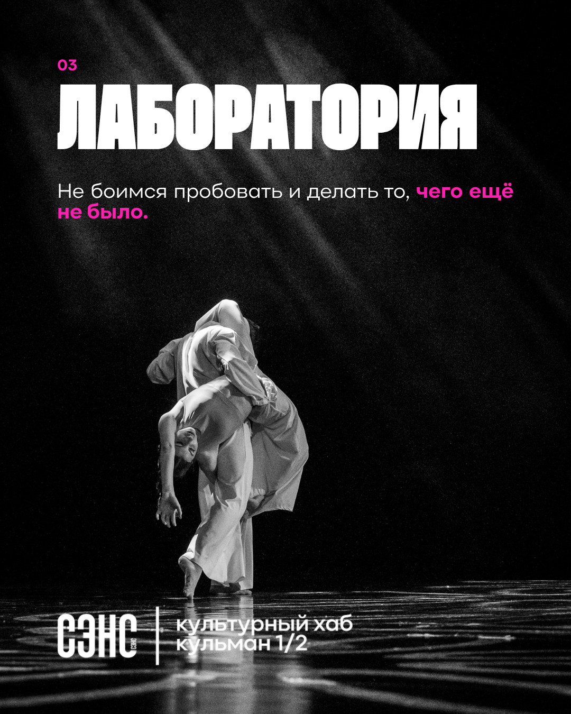
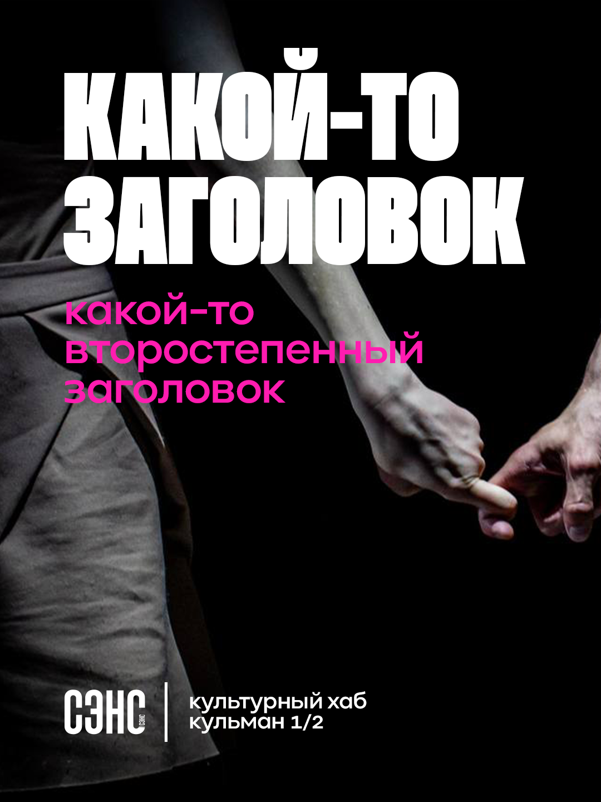
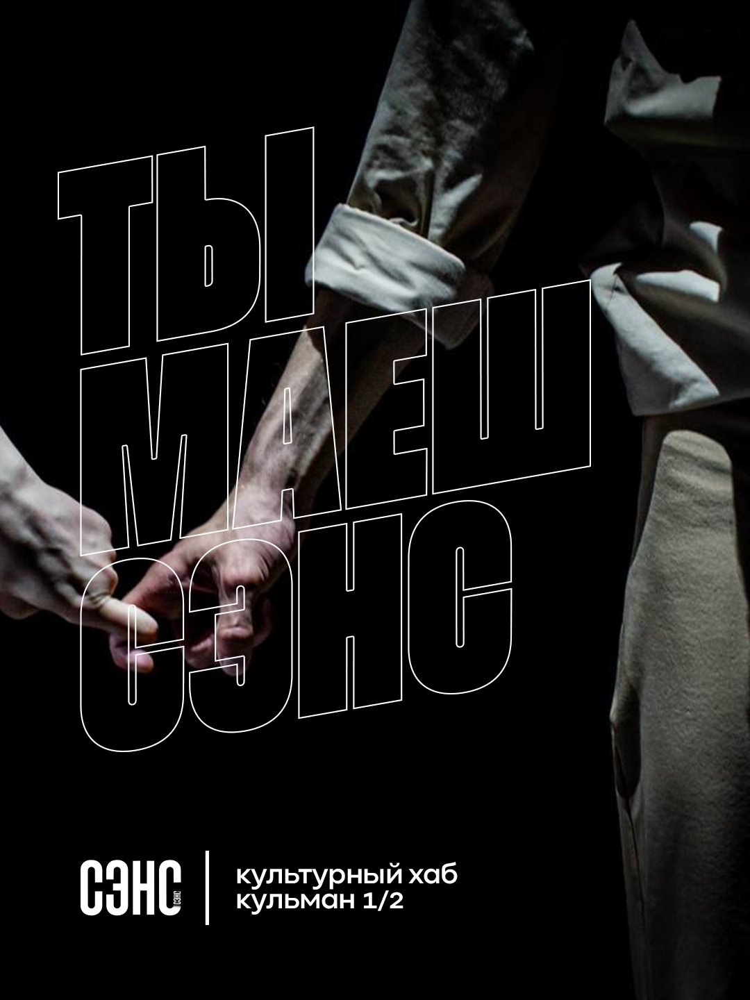

Черное поле, белая типографика и один сигнальный цвет. Никаких промежуточных компромиссов.

Культурный хаб · Кульман 1/2
СЭНС
У этого названия есть смысл.
Система 01—07
Минск · 2026
Минск · 2026
01
Движение как метод
СЭНС говорит языком сцены: резко, телесно и без декоративного шума. Система строится на столкновении монументального текста, живого кадра и больших пауз.
Заголовок не сопровождает изображение — он становится частью хореографии кадра.
В центре — жест, напряжение, контакт и след движения. Не поза, а момент действия.
Пустое пространство работает как тишина на сцене: направляет внимание и усиливает событие.
02
Цвет
Базовая палитра почти монохромна. Electric Pink — не украшение, а смысловой маркер: дата, номер, действие или короткая часть фразы.
Правило 90 / 9 / 1: черное поле — 90%, белое содержание — 9%, розовый сигнал — не более 1% композиции.
03
Голос системы
Два фирменных семейства, четыре режима. Beni держит афишный масштаб; Kinetika обслуживает смысл, интерфейс и навигацию.
Лаборатория
Ты идешь
какой-то второстепенный заголовок
Не боимся пробовать и делать то, чего еще не было. Текст короткий, прямой и живой. Мы не объясняем культуру сверху — мы приглашаем войти внутрь.
04
Сетка и ритм
Сетка дисциплинирует крупную типографику, но не делает композицию статичной. Допустимы сдвиги, пересечения и вертикальный набор.
0102030405060708
08xs
16sm
24md
48lg
72xl
05
Живой кадр
Фотография не иллюстрирует событие, а фиксирует его физическую энергию. Кадрирование близкое, свет драматичный, зерно допустимо.



Жесткий контровой или точечный. Черный должен занимать значительную часть кадра.
Руки, ткань, лица и контакт можно обрезать. Центрирование не обязательно.
Монохром, высокий контраст, заметное зерно. Цвет — только если он несет сюжет.
06
Компоненты
Интерфейс поддерживает афишу, но остается практичным: крупные зоны нажатия, ясные состояния и минимум декоративных контейнеров.
Действия
Фильтры
Событие
Ты идешь — совместный перформанс
Открытая лаборатория движения
Манифест
Не боимся пробовать и делать то, чего еще не было.
07
Афишный модуль
Одна система дает два характера: Solid — для объявления и прямого сообщения; Outline — для манифеста, серии или образного заголовка.
01 · ПРЕМЬЕРА
Какой-то заголовок
СЭНС
культурный хаб
Кульман 1/2
02 · ПЕРФОРМАНС
Ты идешь
СЭНС
культурный хаб
Кульман 1/2
Делать
- Выбирать один главный жест на макет.
- Разрешать заголовку пересекать изображение.
- Оставлять минимум одну крупную зону тишины.
Не делать
- Красить большие площади в розовый.
- Использовать мягкие тени, скругления и градиенты.
- Ставить больше двух акцентных начертаний рядом.